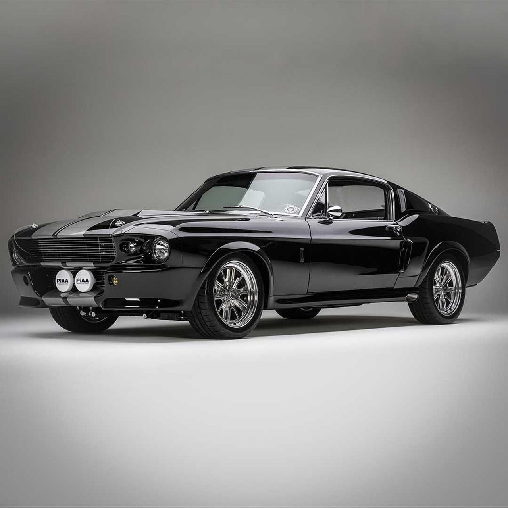

Eleanor | Ford Mustang Shelby GT500 1967 una bestia indomable
Antonio Castillejo, Oct 10, 2024
El Mustang Shelby GT500 es una de las leyendas automovilísticas más arraigadas en el gusto de los entusiastas de los automóviles deportivos.
Leer másEl mejor blog de coches para programadores
El Mustang Shelby GT500 es una de las leyendas automovilísticas más arraigadas en el gusto de los entusiastas de los automóviles deportivos.
Leer másEl Dodge Viper GTS era una actualización de la segunda serie de este conocidísimo deportivo de la marca del carnero.
Leer más